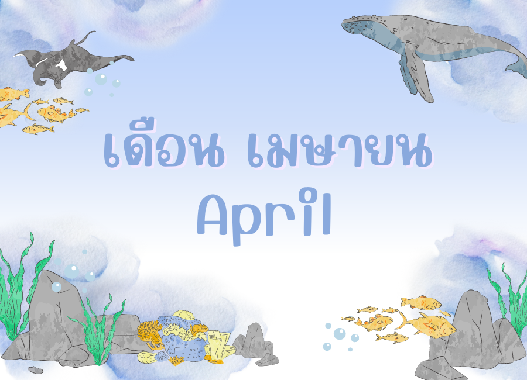

ทายนิสัยตามเดือนเกิด


🌻✨ คนเกิดเดือนมกราคม
เป็นคนค่อนข้างรอบคอบ ระมัดระวังวิตกจริต คิดมากตลอดเวลา ในบางคนก็ชอบเก็บสะสมของเก่า ของโบราณ รู้จักเก็บ มัธยัสถ์ งก
ขี้เหนียว เสียดายของ ประหยัด ชอบที่จะแชร์ค่าใช้จ่าย มองกำไรขาดทุนไว้ก่อนเสมอ ดูเหมือนเห็นแก่ตัว แต่จริง ๆ
แล้วฉลาดจึงสามารถเป็นนักธุรกิจที่ดีได้ทะเยอทะยาน ชอบเอาชนะ บางทีก็คิดเล็กคิดน้อยอะไรไม่รู้ เชื่อมั่นในตัวเองสูงมาก
ทรหดอดทนเป็นยอดเลยละ โดยเฉพาะในเรื่องงานแล้วละก็บ้างานมาก จนทำให้บางทีความรักที่มีอยู่จืดไปเลย
จะแต่งงานช้าก็เพราะมัวแต่เลือกมากคิดมากอยู่นั่นแหละ ไม่ค่อยให้ความสำคัญกับความรักสักเท่าไหร่ ถ้างานที่ต้องรับผิดชอบนั้น
ยังไม่เสร็จสิ้น เพราะเป็นคนที่มีความรับผิดชอบสูง เป็นนักปฏิบัติ แต่ในด้านความรัก
ก็ใช่ย่อยมีเสน่ห์ล้ำลึกนัก มีความต้องการทางเพศค่อนข้างสูงอยู่เหมือนกัน บางครั้งก็ขี้หงุดหงิดเอาแต่ใจตัวเอง
แต่ทำเป็นขรึมเย็นชาซะอย่างนั้นแหละ บางทีก็ชอบเก็บตัวชอบสร้างกำแพง ทำเป็นหยิ่งแต่จริง ๆ กลับเป็นคนง่าย ๆ
ไม่มีอะไรหรอก ไม่มีพิษไม่มีภัยกับใคร สงบนิ่ง เจ้าระเบียบซะอีกแน่ะ รักเกียรติยศชื่อเสียงเป็นอย่างยิ่ง ทำอะไรไม่ค่อยพึ่งใครชอบทำเอง
แต่ก็เป็นคนมีบุญ มักได้คู่ดี
🌷✨ คนเกิดเดือนกุมภาพันธ์
มักเป็นคนที่มีอุปนิสัยร่าเริง เพื่อนฝูงมากมาย เพราะเป็นคนที่ตองการมิตรที่แท้จริง แต่ก็มักไม่ค่อยมีเพื่อน และที่สำคัญมีเพื่อนแท้น้อยมาก
ชอบอยู่ในแวดวงสังคมที่ดี เพราะเป็นคนที่สามารถยิ้มแย้มแจ่มใสได้กับทุกสถานการณ์ ถึงแม้ว่าตนเองจะทุกข์อยู่ก็ตาม
ชอบที่จะทำให้คนอื่นมีความสุข เป็นคนที่ช่างพูดช่างคุย ตีหน้าได้เก่ง มีนิสัยช่างคิดช่างจำแถมยังมีแผนการมากอีกด้วย
เชื่อมั่นและมีความเห็นเป็นของตัวเอง ซื่อตรงดี ชอบอิสระไม่ชอบขึ้นกับใคร หรือให้ใครบังคับขู่เข็ญให้ทำ หรืออยู่ใต้การควบคุมของใคร
อยากทำอะไรทำเองไม่ต้องมาสั่ง ชอบชีวิตที่เรียบง่ายมากกว่า ถึงแม้ว่าตัวจะต้องอยู่ในสังคมก็ตาม คนเกิดเดือนกุมภาพันธ์เป็นคนที่มีหัวคิดริเริ่มมีไอเดียอะไรดี ๆ
และแปลกใหม่อยู่เสมอ เพราะเป็นคนที่ใส่ใจเรียนรู้และสร้างสรรค์ ตามยุคตามสมัยทันเหตุการณ์ของโลกอยู่เสมอ ชอบเปลี่ยนแปลงจนคนรอบข้างตามไม่ทันหรือคิดไม่ถึงก็มี
จริงใจเปิดเผยตรงไป ตรงมา นิสัยไม่ดีคือมักเอาแต่ใจและดื้อรั้นมาก ในบางครั้งก็ดูก้าวร้าวขวานผ่าซากและขี้งอนขี้น้อยอกน้อยใจ
เป็นคนที่ชอบสนุกสนาน ชอบช่วยเหลือเพื่อน ทั้งที่ทำคุณกับใครไม่ค่อยขึ้นหรอก คบกับใครก็ได้ ช่างเลือกด้วย แถมไม่ชอบผูกมัดหรือมีพันธะติดกับใคร
จึงหาคู่ที่ถูกใจยากออกสักหน่อย
🧸🤎 คนเกิดเดือนมีนาคม
เป็นคนที่ชอบเห็นอกเห็นใจชาวบ้าน ชอบช่วยเหลือคนอื่นแล้วก็ไปรับแบกภาระซะอย่างนั้นแหละ เข้ากับคนง่าย ปรับตัวได้ดีมีมนุษยสัมพันธ์ที่ดี
มีจิตใจที่เมตตาโอบอ้อมอารี มีคุณธรรมสูง ชอบสร้างบุญสร้างกุศล แต่มักเป็นคนที่ขี้เหงา ว้าเหว่ หรือไม่ชอบอยู่ในที่แคบ ๆ
มักชอบที่จะอยู่ในที่โล่งแจ้งมากกว่า แต่อารมณ์มักอ่อนไหวง่ายมาก ๆ ในบางครั้งก็ขี้หงุดหงิด จิตใจไม่แน่นอน
อารมณ์เปลี่ยนไปเปลี่ยนมาเหมือนน้ำ ที่วันนี้ไม่รู้จะอยู่ในโอ่งหรือว่าขวดกันแน่ บางครั้งก็ดูแข็ง บางทีก็อ่อนไหวง่ายเหลือเกิน
ด้วยความใจอ่อนนี่แหละมักทำให้สูญเสียโอกาสดี ๆ ไปเสมอ ดูอ่อนโยนสุภาพแต่ก็มีอารมณ์ที่ก้าวร้าว และปากร้ายได้เหมือนกัน
เพราะเป็นคนที่เย็นก็ได้ ร้อนก็ได้ เสียใจง่าย ดีใจง่าย คล้อยตามคนอื่นได้ ไม่ค่อยแข่งขันอะไรกับใคร มักพอใจในสิ่งที่ตนมี
เป็นคนที่เชื่อเรื่องโชคลางสิ่งลี้ลับ และชอบที่จะจดจำเรื่องเก่า ๆ หลงรักใครได้ง่าย ๆ และมักจะจมอยู่กับรักเก่า ๆ นั้น แบบพวกมีรักฝังใจไม่ยอมลืม
แต่กับบางเรื่องกลายเป็นคนที่ขี้ลืมบ่อย ๆ เหมือนคนแก่ และก็เป็นคนที่ไม่ค่อยใส่ใจใฝ่หาอะไรที่มันใหม่ ๆ ซะด้วยสิ ยกเว้นชอบที่จะซื้อรองเท้าใหม่ ๆ
อยู่เรื่อยเลย ว่ากันว่าใครที่เกิดในเดือนนี้เท้าสวยแล้วจิตใจจะดีแถมเป็นคนชอบชิมชอบกินเสียด้วยสิ
🥰❣️ คนเกิดเดือนเมษายน
เป็นคนที่มีนิสัยเหมือนเด็ก ๆ อยากรู้ อยากเห็น อยากได้ อยากเป็นไปเสียหมด พอรู้พอเห็นแล้วก็เบื่อ
ไม่เอาแล้ว อยากได้ของใหม่อีกแล้ว คือ เป็นคนขี้เบื่อเหมือนเด็ก ๆ ไม่ค่อยยอมฟังใครง่าย ๆ กล้าได้กล้าเสียไม่ค่อยกลัวอะไร
ลุยลูกเดียว แล้วก็เจ็บ แถมเจ็บไม่รู้จักจำอีกด้วย ชอบกลับไปทำซ้ำใหม่แล้วก็เจ็บอีก บางทีก็ชอบทำเรื่องง่าย ๆ ให้เป็นเรื่องยากได้
จู้จิ้จุกจิกกับเรื่องไม่เป็นเรื่องก็ได้ แต่เป็นคนที่น่าคบนะเพราะเป็นคนที่จริงใจตรงไปตรงมา ไม่ชอบเอาใจใครหรือเยินยอใคร
ชอบไม่ชอบบอกกันตรง ๆ เลย แบบว่าถือของให้ใครก็ไม่เป็น ไม่ชอบผูกมัดชอบอิสระ ชอบที่จะให้คนมาเอาใจมากกว่า
และมักจะหึงและหวงคนรักนะ เพราะถ้ามีรักเมื่อไร จะเป็นคนที่รักเดียวใจเดียว รักแบบบริสุทธิ์ใจซะด้วยสิ
และมักเป็นคนที่มีความต้องการทางเพศสูงอยู่เหมือนกันนะจ๊ะ ทะเยอทะยานใจร้อน ทำอะไรก็รวดเร็วทันใจ
เดินยังดูรีบ ๆ เลย มีอารมณ์รุนแรงขี้โมโหหงุดหงิดง่าย แต่ก็หายเร็ว ทำอะไรหุนหันพลันแล่น อยู่นิ่ง ๆ ไม่เป็นจะอึดอัดหงุดหงิด
เครียด ต้องเคลื่อนไหวอยู่ตลอดเวลา เช่น ชอบออกกำลังกาย หรือทำอะไรที่มันดูเป็นภาคสนามสักหน่อย จะสบายใจกว่าให้นั่งเฉย ๆ
ใครอยากเป็นแฟนต้องเข้าใจและเอาใจ อย่าปล่อยให้เหงาเชียวแหละ
🐼⭐️คนเกิดเดือนพฤษภาคม
ราจะเห็นว่าเดือนนี้มีสัญลักษณ์เป็นรูปวัว เพราะฉะนั้นต้องเข้าใจก่อนเลยว่า คนที่เกิดในเดือนนี้มักต้องทำเพื่อคนอื่น
และต้องอดทนอย่างมาก เหมือนวัวนั่นแหละ ดื้อรั้นเงียบแบบสงบเสียด้วยสิ มักเป็นคนที่ดูจะนิ่ง ๆ ไม่ค่อยแสดงออกสักเท่าไหร่
เป็นคนที่โกรธใครยาก แต่ถ้าโกรธนานเชียว แล้วถ้ามีใครมาแหย่ ให้โกรธเข้าละก็ คุณแกจะกลายเป็นวัวกระทิงทันทีเลยล่ะ
เป็นคนที่รักสวยรักงาม สะอาด รักความเป็นระเบียบเรียบร้อย ทำอะไรถูกกาลเทศะ ความคิด ความอ่านมักค่อนข้างหัวโบราณสักหน่อย
เป็นบุคคลที่เปลี่ยนแปลงอะไรยากมาก ๆ เช่น การกิน หรือความเชื่อ ใครบอกก็ไม่เปลี่ยน นอกจากตัวเองจะเปลี่ยนแปลงความคิดหรือการกระทำเอง
ไม่ค่อยยืดหยุ่นกับชีวิต ชอบคิดว่าฉันเป็นฉันเอง เป็นคนที่ชอบอยู่นิ่ง ๆ สงบ ๆ อยู่คนเดียวก็ได้ อยู่กับเพื่อน ๆ ก็ได้ โคตรอดทนและบึกบึนมาก งานทำได้ทุกอย่างหนักเอาเบาสู้ได้หมด แถมเป็นคนมัธยัสถ์ ประหยัด ชอบเก็บสะสมทรัพย์สินอีกด้วย เรียกว่าเศรษฐีได้เลย แต่ก็ไม่ค่อยได้ใช้เองหรอกชอบให้คนอื่น ยิ่งถ้าเป็นคนที่ตัวเองรักแล้วละก็…เต็มที่ไปเลย เป็นคนที่อ่อนไหวต่อความรักมาก รักแล้วทุ่มเทเกินเหตุ มักถือดีเรื่องความรักเสมอ หรือจะชื่นชม ให้กำลังใจหน่อยก็จะดี คนเดือนนี้ชอบให้ชมบ่อย ๆ พวกบ้ายอไง
🌈☁️ คนเกิดเดือนมิถุนายน
เป็นคนที่ฉลาดมาก มักคิดอะไรได้รวดเร็วกว่าชาวบ้าน คือ มีความถนัดในการใช้สมองมากกว่ากำลัง ชอบคิดชอบพูด ชอบเขียน อยากรู้
อยากเห็น อยากลอง ต้องการเรียนรู้ทุกสิ่งทุกอย่างบนโลกใบนี้ เพื่อความอยู่รอด จึงมักเป็นคนที่ดูทันสมัยอยู่ตลอดเวลา และในชีวิตมักมีอะไรเข้ามาทีละสองอย่างเสมอ
ทำให้ต้องลำบากใจที่จะต้องเลือก ไม่ว่าจะเป็นความรัก หรือ การงาน ความคิดก็มักลังเล รักพี่เสียดายน้องอยู่นั่นแหละ เป็นคนที่มีความสามารถหลายอย่าง
สามารถทำอะไรหรือคิดอะไรได้ หลาย ๆ อย่างในเวลาเดียวกัน บางทีกลายเป็นคนสองบุคลิก หรือ คนสองหน้าได้เหมือนกัน สามารถแก้ปัญหาให้ใครต่อใครได้ในพริบตาเชียวล่ะ
เป็นที่ปรึกษาและให้กำลังใจที่ดีเลยคนเดือนนี้น่ะ ชอบท่องเที่ยวไม่ชอบอยู่กับที่นาน ๆ ชอบเปลี่ยนแปลงอะไรต่อมิอะไรอยู่ตลอดเวลา ทำให้ดูเหมือนเป็นคนที่ขาดความอดทน เป็นคนที่ค่อนข้างตรงและเอาแต่ใจตนเอง
ไม่ค่อยเก็บความสงสัยเอาไว้ จะถามให้รู้เรื่องไปเลย จะทำอะไรก็เหมือนกันจะต้องทำให้มันสำเร็จ ชนิดไม่เสร็จไม่เลิก มีความว่องไวใจร้อนมากโดยเฉพาะเรื่องงาน
ไม่ชอบให้ใครมาจู้จี้ขี้บ่น หรือซักถามยิ่งเวลาไปไหนมาไหน ไม่ต้องถาม ถ้าอยากบอกจะบอกจะเล่าเอง ด้วยความทันสมัยและชอบเที่ยวจึงเป็นผู้ที่ใช้เงินเปลืองมาก
🐼⭐️ คนเกิดเดือนกรกฎาคม
นับได้ว่า เป็นคนอ่อนไหวไวต่อความรู้สึก ระมัดระวังตัวหวาดระแวงตกใจง่ายไม่ค่อยไว้ใจใครง่าย ๆ รักษาผลประโยชน์รู้จักเก็บออมเงินเก่ง
(ปูมักจะลากทุกอย่างเข้ารู) ถ้าเจอปัญหาเศร้าทุกข์อะไร จะขอหลบไปก่อน ไม่รับโทรศัพท์ ไม่รับแขก ไม่ยอมเจอใคร แต่พอตั้งสติได้จะค่อย ๆ
กลับมาแก้ไขและกลับมาเป็นคนเดิมเอง เป็นคนรักบ้าน รักครอบครัวมาก ชอบอยู่กับบ้านและทำกิจกรรมที่บ้านมากกว่าให้ออกนอกบ้าน
เพราะมันเป็นสิ่งที่ทำให้ชาวกรกฎรู้สึกปลอดภัยและอบอุ่น มีความสุขที่สุด ดูจากภายนอกออกจะแข็งกร้าว ปากแข็งแต่จริง ๆ
ภายในอ่อนปวกเปียกมาก ลองดูจากสัญลักษณ์ที่คนโบราณเปรียบเทียบไว้เป็นปูไง มีกระดอง แต่ข้างในนิ่มเชียว มีความอดทนต่อความยากลำบาก
ชอบใส่ใจความรู้สึกคนอื่น ไม่ว่าเป็นหญิงหรือชายมักมีความเป็นแม่อยู่ในตัว มีสัญชาตญาณในการให้ ห่วงใยเอื้ออาทร ชอบช่วยเหลือชาวบ้าน
เอาอกเอาใจ (เฉพาะ) คนที่ตัวรัก เก็บรายละเอียดได้ดีไม่ว่าจะเรื่องอะไร โดยเฉพาะเรื่องเก่า ๆ หรือพวกรักฝังใจ ไม่ยอมลืม แต่เจ้าอารมณ์ชะมัดเลยล่ะ
จู้จี้จขี้บ่น เจ้าระเบียบ ต้องปล่อยให้บ่นไป เดี๋ยวเหนื่อยก็หยุดไปเองแหละ ต้องระวังเรื่องเครียด เพราะเป็นคนวิตกจริตคิดมาก
รักใครแล้วไม่ค่อยปล่อยง่าย ๆ แถมขี้หึงถึงตายเลยล่ะ (ปูหนีบ)
🦖💖 คนเกิดเดือนสิงหาคม
คนที่เกิดในเดือนนี้เหมือนจ้าวป่าจึงมักจะเริ่ดเชิดหยิ่งไว้ก่อนเดินยังเอาหน้าไปก่อนเลย ไม่ค่อยยอมก้มหัวให้ใครง่าย ๆ ไม่ง้อใครถ้าไม่จำเป็นจริง ๆ
ชอบที่จะเป็นหัวหน้า เป็นผู้นำมากกว่าคล้อยตาม ชอบความเป็นอิสระทั้งด้านงานและการใช้ชีวิต ไม่ชอบขึ้นอยู่กับใคร
เชื่อมั่นในตัวเองมาก ใจใหญ่ถึงไหนถึงกัน เล็ก ๆ ไม่ ใหญ่ ๆ ทำ รักเกียรติยศชื่อเสียง เสียอะไรไม่ว่า เสียหน้าข้าไม่ยอม
ใจร้อนหงุดหงิด ขี้โมโห จริงจังกับชีวิตมากจนกลายเป็นพวกบ้าอำนาจ หรือจอมเผด็จการ ฉลาดหลักแหลม เจ้าปัญญา เจ้าความคิด
คิดโน่นนี่ได้ตลอดเวลา แต่บางทีก็ไม่ยอมทำเอง ชอบใช้คนอื่นทำแทน จึงควรเป็นที่ปรึกษานั่นแหละดี เพราะเป็นคนที่ไม่เคยเชื่อใจหรือไว้ใจใครเลย
และไม่ค่อยชอบพึ่งใครด้วย รักเฉพาะพวกพ้องพี่น้องและครอบครัวของตัวเอง สามารถเสียสละให้ได้ทุกอย่าง เป็นคนที่อยากให้ทุกคนมารัก
อยากให้ทุกคนยอมหรือยกย่องตัวเอง อย่าไปขัดใจหรือโต้แย้ง ปกติใครอยู่ด้วยจะน่ารักมาก เพราะจริง ๆ
เป็นคนที่ขี้สงสารและชอบให้อภัย หรือให้โดยไม่ค่อยหวังผลตอบแทน เพียงแต่ไม่ชอบที่จะแสดงความอ่อนแอให้ใครเห็นเท่านั้นเอง
เป็นคนที่หาเงินเก่งและก็ใช้จ่ายเก่งด้วย ถ้าพอใจอยากได้อะไรต้องได้จะจ่ายไม่อั้น ยังไงก็ต้องรักษาหน้าไว้ก่อน
จะหาคู่ครองต้องเป็นคนใจเย็นเป็นผู้ใหญ่กว่า มีปัญญาที่เหนือกว่าจึงจะอยู่กันได้ หรือไม่ก็อยู่ใต้เท้าคุณสิงหาคมแกไปเลยหมดเรื่อง
🥨✨ คนเกิดเดือนกันยายน
นับว่าเป็นคนที่เฉลียวฉลาด คล่องแคล่วว่องไว มีเสน่ห์ ไม่ว่าเป็นชาย หรือ หญิงมักมีแต่เรื่องหยุมหยิม มีข้อสงสัย หรือ วิเคราะห์
ทุกอย่างจนเกินเหตุ เป็นคนที่เข้าใจยากอยู่สักหน่อย เพราะชอบเอาแต่ใจทำอะไรตามอารมณ์เหมือนผีเข้า ผีออก ไม่แน่นอน
คนอื่นอาจจะงง ๆ เหมือนจะประสาทหลอน แต่จริง ๆ แล้วเพราะเป็นคนที่ละเอียดลออ เอามาก ๆ ชอบสังเกต พิถีพิถันออกแนวหัวโบราณ
วิตกจริตคิดมากเท่านั้นเอง ช่างคิดช่างฝันช่างจินตนาการ มีนิสัยชอบเปลี่ยนแปลงหรือพยายามทำสิ่งต่าง ๆ
ที่คนอื่นเขาทำทิ้งไว้ ค้างไว้ ให้เสร็จสมบูรณ์ตามแบบฉบับของตัวเอง พูดง่าย ๆ ก็คือชอบ จู้จี้จุกจิก เจ้าระเบียบ
ชอบจับผิดคนเก่งมาก แต่ก็เป็นคนที่มองโลกในแง่ดีนะ ถึงจะชอบจับผิดก็เถอะ แล้วชอบที่จะช่วยเหลือชาวบ้านหรือดันไปแบกรับภาระคนอื่นมา
จะดูเหมือนเรื่องมาก และเลือกมากไปเสียทุกเรื่องไม่ว่าจะเป็นการแต่งตัวต้องดูดีก่อนออกจากบ้านหรืออาหารการกินต้องสะอาด
โดยเฉพาะเรื่องความรักมักจะใช้เวลาเลือกค่อนข้างนาน แต่ถ้าได้รักแล้วมักจะรักนานเลยเช่นกัน เป็นคนที่ขยันทำมาหากินมาก
บางครั้งประหยัดจนดูเหมือนขี้เหนียว ช่างพูดช่างเจรจา พูดเก่งและแก้ตัวเก่งอย่างมีเหตุผลเสียด้วยสิ ผิดกับการบอกรักกลับเป็นคนที่ไม่กล้าแสดงออก
ขี้อาย ปากแข็งมาก ถ้าคิดจะเอ่ยปากบอกรักใครสักคน เวลารักใครชอบรักจนหมดหัวใจ จึงมักโดนคนที่ตนรักหลอกหรือเอาเปรียบอยู่เสมอ
🦕💙 คนเกิดเดือนตุลาคม
คนเดือนนี้เป็นคนสุภาพอ่อนโยน นุ่มนวล สะอาดน่ารัก เป็นนักการทูต มีพรสวรรค์ในการเจรจา (กะล่อน) แต่ประนีประนอม หรือ
โน้มน้าวจิตใจคนได้ดี เป็นคนค่อนข้างตรงและเอาจริงเอาจัง คิดยังไงก็พูดออกมาอย่างนั้น สามารถที่จะโอนอ่อนผ่อนตาม
คล้อยตามมากกว่าขัดใจ ใครว่าอะไรก็ว่าด้วย เป็นคนที่มีเสน่ห์ อยู่ในตัวเอง ถ้าไม่หน้าตาดี บุคลิกก็ต้องดูดีมีราศี
สามารถดึงดูดคนให้เข้ามาหาได้อย่างง่ายดาย ในบางคนก็รักสวยรักงานศิลปะ ชอบเข้าสังคมทำอะไรเพื่อสังคม
ชอบความสนุกสนานร่าเริง ฟุ้งเฟ้อ ชอบความหรูหรา เป็นคนที่ถ้ารู้จักใคร ถูกชะตาจะรักมาก รักเร็วและทุ่มเทซะเกินเหตุ
แต่ถ้านึกอยากจะเลิกก็เลิกเลยแบบไม่มีเหตุผลเช่นกัน เรียกได้ว่ารักง่าย หน่ายเร็ว เป็นคนที่รักพวกพ้องเพื่อนฝูงเอามาก ๆ
ใครไม่เป็นพวกข้า ไม่ดีด้วย จนในบางครั้งดูเหมือนดื้อและก้าวร้าวมาก อารมณ์บางครั้งก็ขึ้น ๆ ลง ๆ
จะตัดสินใจทำอะไรได้แต่ละอย่างคิดอยู่นั้นแหละ (ลังเล) ไม่ค่อยเชื่อมั่นในตัวเอง มักต้องรอจังหวะ เหมือนตาชั่ง (สัญลักษณ์)
กว่าตาชั่งที่เอียงไปเอียงมาจะตรงหรือสมดุลกันได้ก็เล่นเอานานเหมือนกัน ขยันทำงานฉลาดในการทำธุรกิจ
มีความสุขุมรอบคอบและเยือกเย็นได้แต่สิ่งที่ควรระวังก็คือมักเชื่อคนง่าย จึงมักมีสิทธิ์โดนหลอกใช้ได้เหมือนกัน
🍼💙 คนเกิดเดือนพฤศจิกายน
คนเดือนนี้เป็นคนที่ดูแล้วค่อนข้างจะลึกลับ ถ้าไม่สนิทกันจริงไม่ค่อยเล่าเรื่องของตัวเองให้ใครฟัง ค่อนข้างไม่ค่อยไว้ใจใครง่าย ๆ มีความระแวดระวังตัวอยู่ตลอดเวลา
เป็นคนที่เก็บความรู้สึกเก่ง เก็บความลับเก่ง ชอบทำตัวลึกลับ มีความในใจซ่อนเร้น มีความสงสัยอยู่ตลอดเวลา มีความทิฐิมานะ วางท่า ไว้ตัว ทำตัวเหมือนหยิ่ง อดทน อดกลั้น
แต่ถ้ามีอารมณ์โกรธฉุนเฉียวขึ้นมาล่ะก็ กล้าเผชิญกับทุกสิ่ง จะหนักหนาหรือใหญ่แค่ไหนก็ไม่ค่อยกลัว ช่างประชดประชัน เหน็บแนมเก่งมาก
คำพูดคำจาบางทีชอบพูดแรง ๆ ตรงเกินกว่าที่คนรอบข้างจะรับได้ แต่ก็พูดออกมาจากใจจริงของตัวเองนะ เป็นคนขี้งอนใจน้อย
อารมณ์แปรปรวน เอาแต่ใจเจ้าอารมณ์ ไม่ค่อยสนใจใส่ใจใคร ดูเหมือนดุร้าย ไม่น่าเข้าใกล้ จนบางครั้งคนรอบข้างจะคิดว่าเป็นบ้า
แต่แท้ที่จริงแล้ว ทำไปเพื่อจะป้องกันหรือปิดบังอะไรบางอย่าง ที่เป็นปมด้อยในตัวเองที่ไม่อยากให้ใครรู้ เป็นคนฉลาดเจ้าความคิดจะตายไป
ชอบพลิกแพลงเอาชนะด้วยมันสมอง ไม่ค่อยชอบใช้กำลังสักเท่าไร มักมีเล่ห์เหลี่ยมชั้นเชิงในการทำธุรกิจ ด้านความรักก็มักแต่งงานช้า
หรือหาคนถูกใจยากสักหน่อย เพราะมัวแต่ขี้ระแวงอยู่นั่นแหละ และไม่ค่อยชอบให้ใครมาจู้จี้มากนัก มีโลกส่วนตัวสูง แต่ก็เข้าได้กับทุกคนนะ
เพียงแต่คนอื่นอ่านไม่ค่อยออก ก็เท่านั้นเอง
🐙❣️ คนเกิดเดือนธันวาคม
ด้วยความชอบผจญภัยให้อยากอยู่บ้านแทบตาย ยังไงก็ต้องมีเหตุอันให้ต้องออกจากบ้านจนได้ ในชีวิตมักต้องไปได้ดีเอาไกลบ้าน ไกลเมือง
ไกลถิ่นฐานที่เกิด หรือได้คนรักในแดนไกลแล้วชีวิตจะดีกว่า เป็นคนที่มักโชคดีเรื่องการเงิน เป็นคนอารมณ์ดี ขี้เล่นชอบพูด
ชอบเล่าอะไรสนุกสนาน จนในบางครั้งเกินความเป็นจริงไปซะไกลเลยเชียว ชอบที่จะเรียนรู้อะไรใหม่ ๆ
เพิ่มเติมจากที่ตัวเองรู้ ชอบพัฒนาชอบสำรวจ สามารถให้คำปรึกษากับคนรอบข้างได้ดี เพราะเป็นผู้รอบรู้และเป็นนักวางแผนที่ดีได้
เป็นคนที่ฉลาดและรอบคอบ คิดสร้างสรรค์อะไรมักจะไปเจริญหรือเป็นจริงได้ในอนาคต คือมีความคิดที่ก้าวไกลกว่าคนอื่น ๆ
เหมือนหยั่งรู้อนาคตได้ยังงั้นแหละ สามารถแก้ไขปัญหาได้ดี มีรสนิยมดีตรงไปตรงมาและ
จริงใจ ชอบการเดินทาง เปิดหูเปิดตา ชอบกีฬา เรียกว่าอยู่นิ่ง ๆ ไม่ค่อยเป็น
และชอบที่จะเป็นอิสระมากว่ามีเจ้านายคอยควบคุม อยากจะแสดงความสามารถที่มีอยู่ให้ใคร ๆ เห็นมากกว่า
ชอบแหกกฎ อาจเป็นได้ว่าความถือดีว่าตัวเองมีปัญญาฉลาดกว่าคนอื่น เป็นคนที่โกรธง่ายหายเร็ว แต่อย่าย้ำซ้ำเติมความผิด
ของเก่านะ จะไม่ค่อยยอมรับผิดหรือแกล้งทำเป็นไม่รู้ไม่ชี้ด้วยเลยล่ะ ทำให้เราเสียอารมณ์เปล่า ๆ ด้านความรักเป็นคนที่ไม่ชอบแฟนขี้หึง
ถ้าให้อิสระ คนเดือนนี้จะรักตายเลยละ